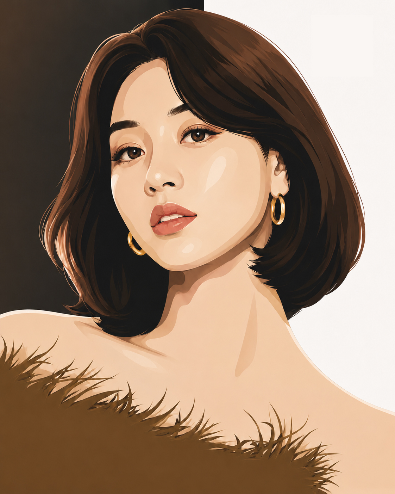
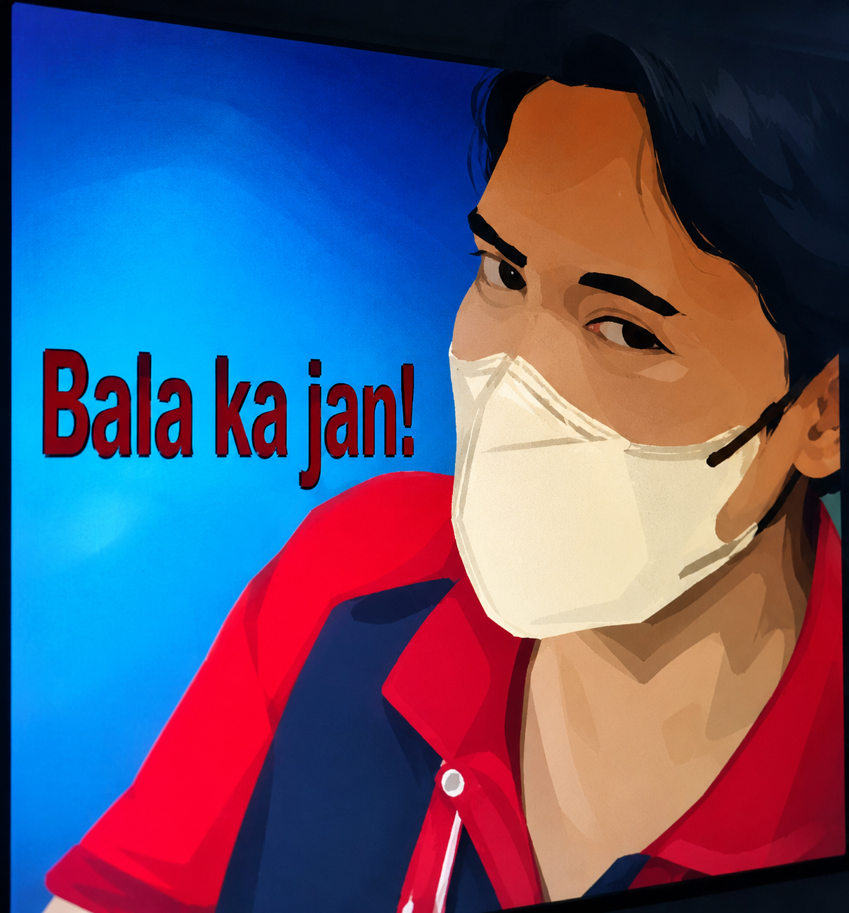
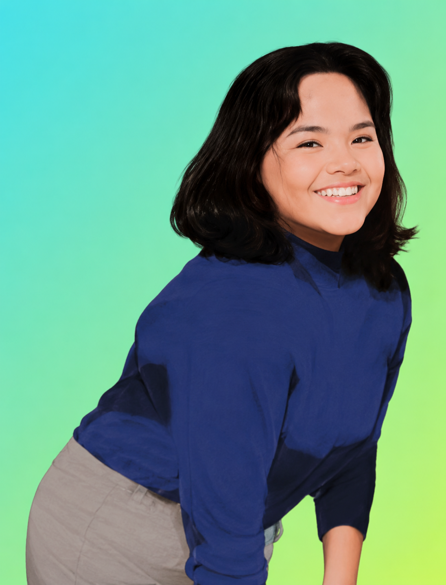
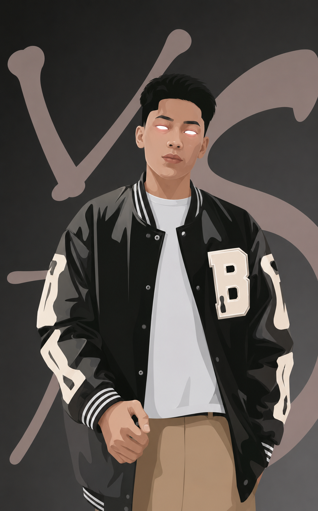
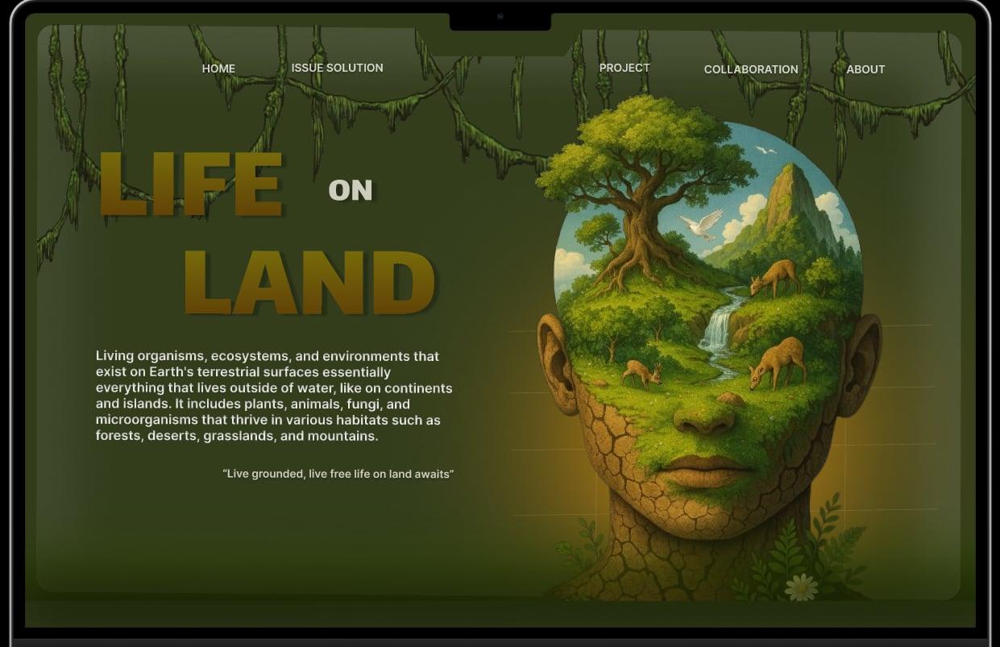
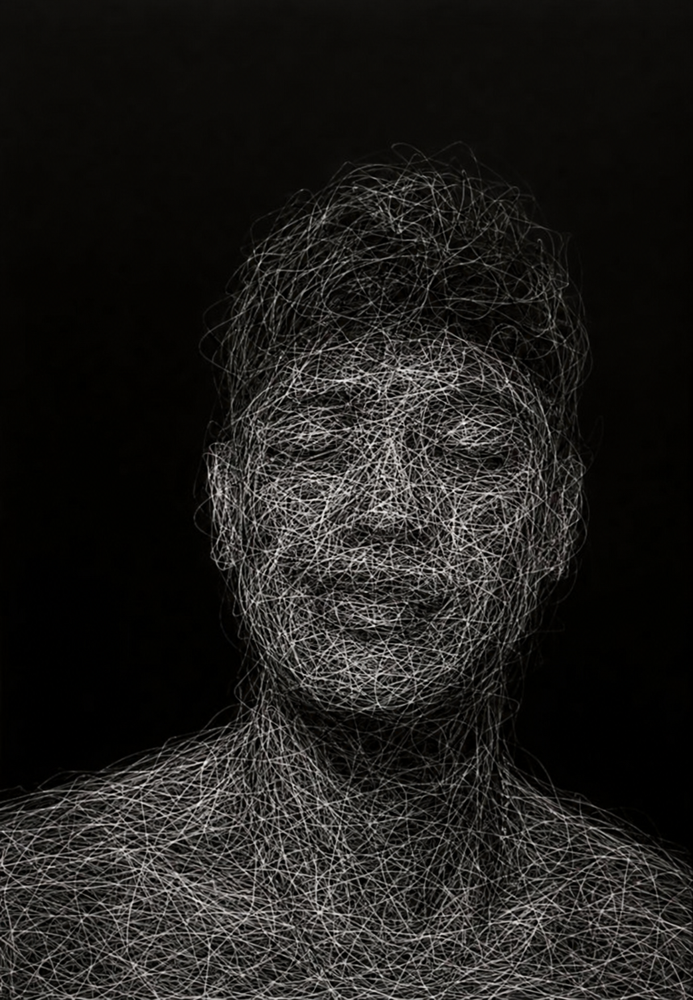
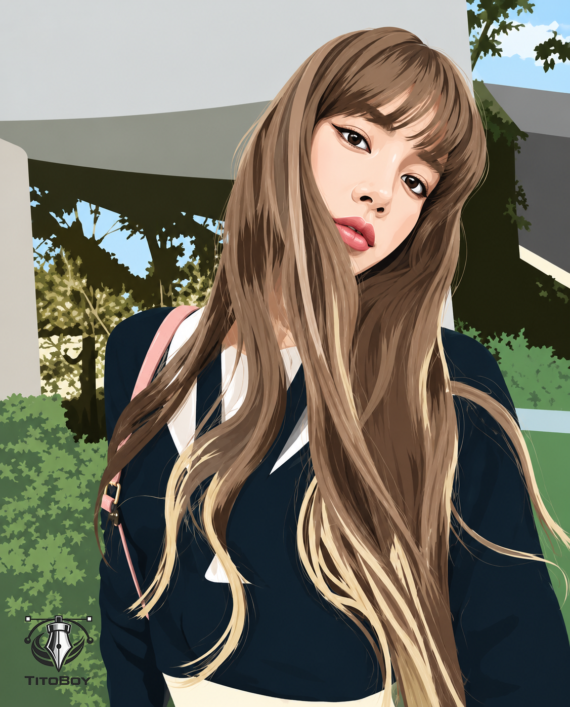
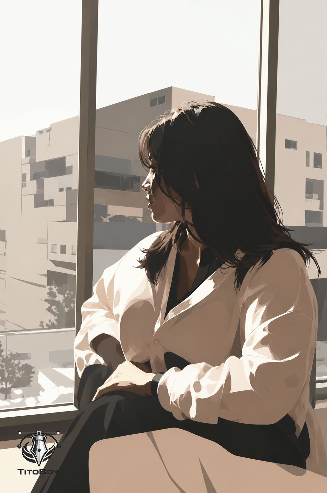

I AM PROFESSIONAL
GRAPHIC DESIGN|

The
Philosophy
Design is not a decorative layer; it is the fundamental architecture of trust. In a world saturated with digital noise, Christian Francisco focuses on subtraction. By removing the non-essential, I amplify the core value of your product.
Strategic Rigor
Every pixel serves a business objective. I leverage data-driven insights to ensure aesthetic choices translate to measurable performance and user retention.
Creative Edge
Functional doesn't have to mean boring. I inject high-end motion and sophisticated typography into every project to create a lasting emotional resonance.
Selected Works & Moments
A collection of architectural inspirations and recent interface explorations.

Pen Tool Portrait







Ready to elevate your digital presence?
Currently accepting high-impact projects for Q3 and Q4 2024. Let's discuss your vision.
Get in touch mail